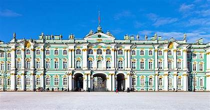
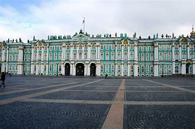
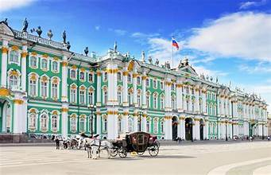
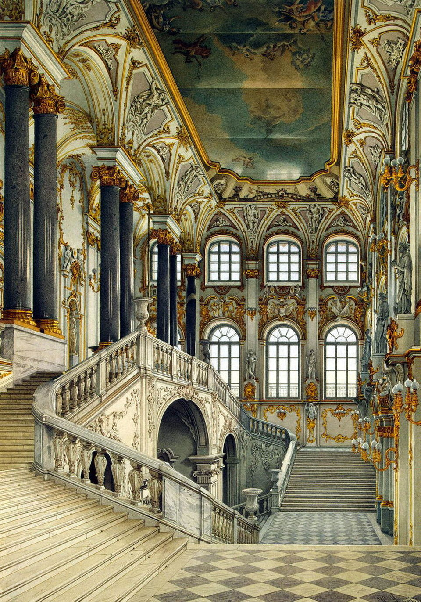
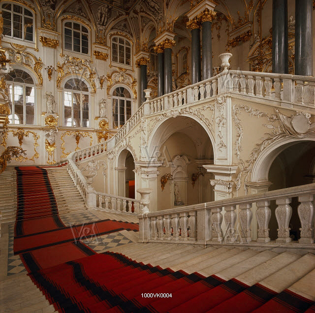

The Winter Palace, located in St. Petersburg, Russia, is a grand Baroque-style palace that served as the official residence of the Russian monarchs from 1732 to 1917. It is part of the larger Hermitage Museum complex and is renowned for its opulent architecture, rich history, and vast art collections.
The Winter Palace was commissioned by Empress Anna Ioannovna and designed by the Italian architect Domenico Trezzini. It was completed in 1732 and served as the official residence of the Russian emperors until the Russian Revolution of 1917. The palace was later converted into a museum and is now part of the Hermitage Museum complex.
The Winter Palace is an architectural masterpiece, featuring a blend of Baroque and Rococo styles. It boasts over 1,000 rooms, including the grand Jordan Staircase, the opulent Malachite Room, and the lavishly decorated Armorial Hall. The palace houses an extensive art collection, including works by renowned artists such as Rembrandt, Leonardo da Vinci, Michelangelo, and Raphael.
The Winter Palace is a symbol of Russia's imperial past and is a major tourist attraction in St. Petersburg. Visitors can explore the palace's opulent interiors, admire the art collections, and learn about the history of the Russian monarchy. The palace also hosts various cultural events and exhibitions throughout the year.
The Winter Palace is open to the public daily, with varying hours depending on the season. Guided tours are available, and visitors can purchase tickets at the entrance. The palace is accessible by public transportation or taxi.
Several attractions are located near the Winter Palace, including the Hermitage Museum, the Peter and Paul Fortress, and the Church of Our Savior on Spilled Blood.


